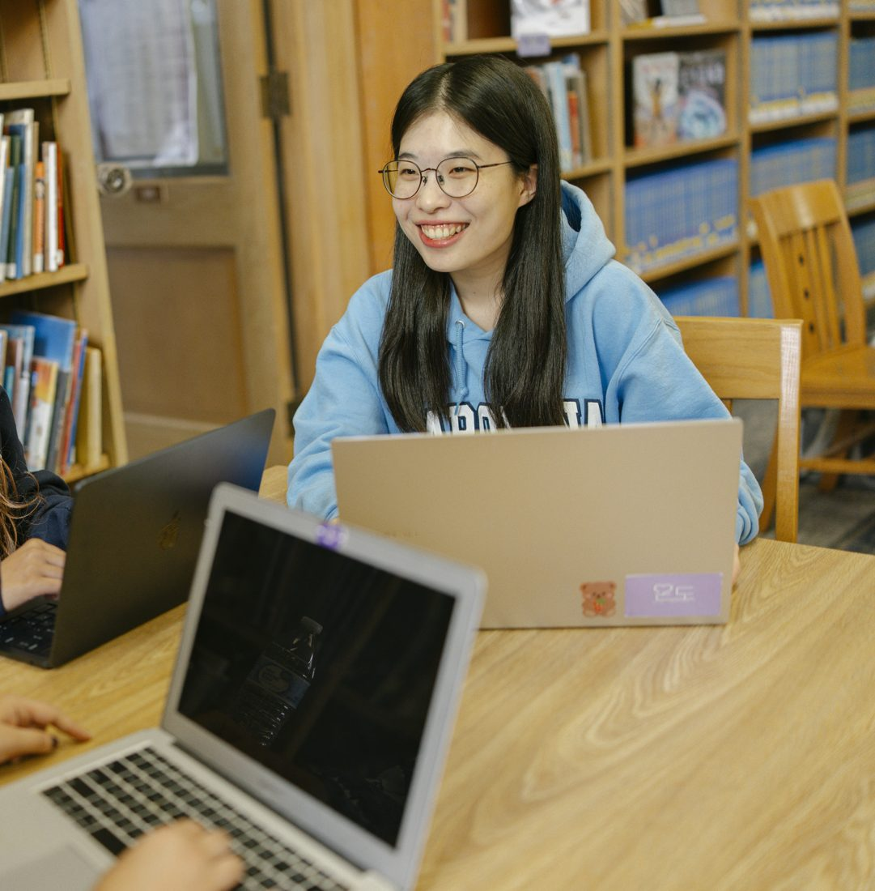

Feel free to reach out anytime.
Newest first. The code on each line shows what kind of entry it is.
| Code | Date | Entry |
|---|---|---|
| EDU | Next | PhD in Information ScienceSeeking |
| EDU | Spring 2027 | MSIS completion (expected)UNC Chapel Hill |
| RES | Nov 2026 | Podium, AMIA 2026 Annual SymposiumDallas, TX |
| RES | Aug 2026 | Poster, IFLA WLIC 2026IFLA World Library and Information Congress |
| SVC | Jul 2026 | Reviewer, AMIA Informatics Year-in-ReviewONGOINGVisual Analytics Working Group |
| RES | Spring 2026 | Independent study: oncology discharge notesiCDCU Lab, UNC |
| TCH | Spring 2026 | Graduate Teaching Assistant, DATA 120ONGOINGUNC Chapel Hill |
| TCH | Mar 2026 | Guest lecture: AI basics and ethical AI in the classroomBull City Schools |
| TCH | Sep 2025 | Digital literacy volunteer teacherONGOINGCommunity Workshop Series |
| SVC | Sep 2025 | Student AmbassadorONGOINGSchool of Data and Information Sciences |
| EDU | Aug 2025 | Began MSISUNC Chapel Hill |
| LIB | Mar 2025 | Intern, Restoration Management DivisionNational Archives of Korea |
| TCH | Apr 2022 | Student teacher, school librarySonggok Girls’ High School, Seoul |
| SVC | 2022 | President, Humanities College Student GovernmentMyongji University |
| LIB | Aug 2021 | Trainee, Digital Initiatives DivisionNational Library of Korea |
| LIB | 2021 | Weekend library assistantSeodaemun Public Library, Seoul |
| SVC | 2021 | President, Library and Information Science Student GovernmentMyongji University |
| RES | Fall 2019 | Student researcher, comparative study of multi-complex librariesMyongji University |
| SVC | 2019 to 2020 | Vice President and freshman representative, LIS Student GovernmentMyongji University |
| EDU | 2019 to 2023 | B.L.S., Library ScienceMyongji University, SeoulGPA 4.25/4.50 |
AI can rewrite clinical notes for patients. Do patients actually understand them?
Seeking a PhD in Information Science.

| May 2026 | Certificate for Digital Literacy Instruction | Community Workshop Series |
| Apr 2026 | Student Delegation Funding, ALA 2026 Annual Conference | UNC SILS |
| Oct 2025 | Student Delegation Funding, NCLA 2025 Conference | UNC SILS |
| 2023 | Librarian Certificate and Librarian Teacher Certificate (Grade II) | Korea |
| 2020 to 2022 | Full-Tuition Merit-Based Scholarship with High Honors | Asan Foundation |